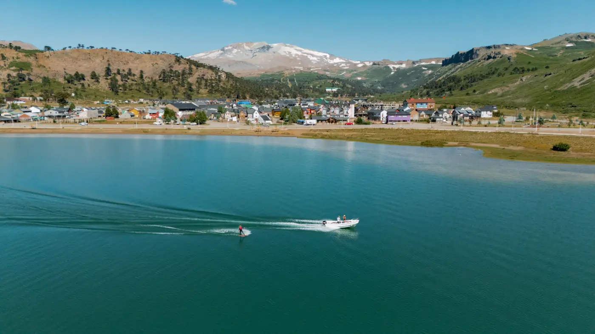
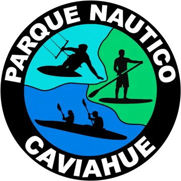

Lago Caviahue

1 / 7
Caviahue y alrededores · Verano
Lancha, wakeboard, kayak y paddle en el Parque Náutico, o una caminata por la costanera. La orilla está a pasos de Trawen y Los Basaltos.
El lago rodea al pueblo y es el corazón del verano en Caviahue: aguas turquesas, costas de araucarias y el volcán Copahue de fondo. Se puede recorrer a pie por la costanera, tomar sol en la playa del pueblo o salir al agua.

Parque Náutico Caviahue
Nuestro parque náutico en el lago, con equipos y salidas para disfrutar del agua en familia o con amigos.
- Paseos en lancha
- Wakeboard
- Kayak
- Paddle
Ubicación
Costanera del lago
Ver ubicación en Google MapsTu lugar en Caviahue
Departamentos, cabañas y hostal boutique para disfrutar de la Patagonia con tu familia, amigos o pareja.